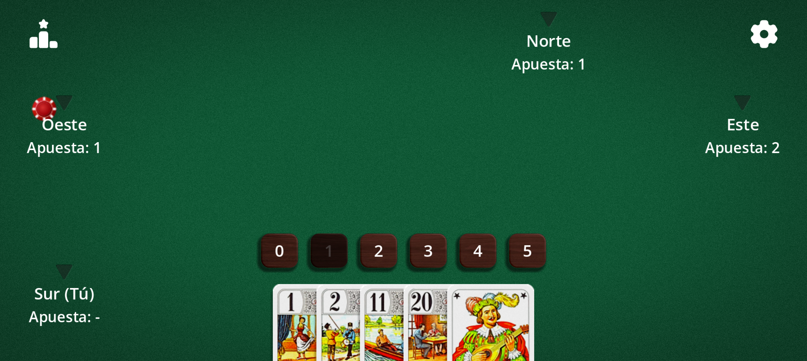
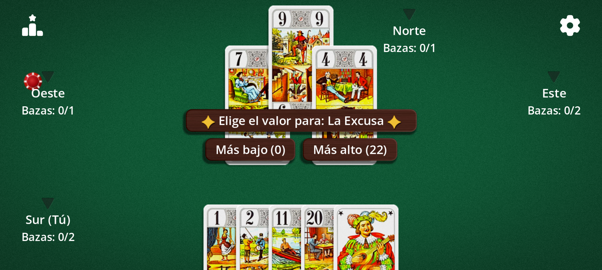
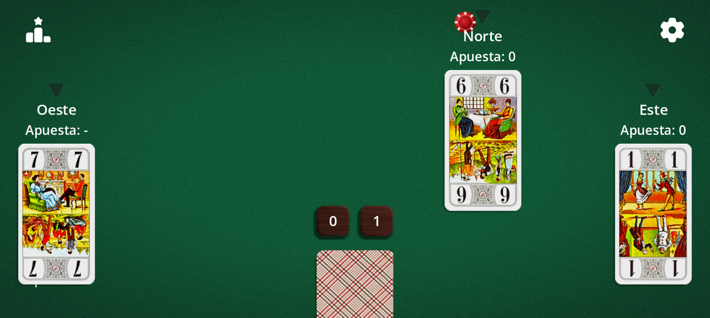

Un juego de bazas en el que no gana quien más bazas hace, sino quien mejor predice. 22 cartas, 3 a 5 jugadores, partidas rápidas.
El Tarot Africano también se conoce como Whist 22. Es primo del «Oh Hell» y se juega con los 22 triunfos del tarot. La variante a la mexicana se conoce también como Tarot mexicano.
Las cartas
El Tarot Africano se juega con solo 22 cartas: los 21 triunfos, numerados del 1 al 21, y la Excusa. No hay palos: solo el valor de la carta decide quién gana la baza.
Carta
Valor
Triunfos 1 a 21
Su propio número (el 21 es el más alto, salvo la Excusa)
La Excusa
0 o 22, a elección del jugador que la juega
El 1, el 21 y la Excusa son tradicionalmente las cartas más valiosas: juégalas en el momento justo y vigílalas en manos rivales.
Objetivo
En cada ronda anuncias cuántas bazas crees ganar. Tu objetivo: ganar exactamente ese número. Acertar te protege; fallar te cuesta vidas, tantas más cuanto mayor sea la diferencia.
La partida termina cuando solo queda un jugador con vidas. También puedes fijar un número limitado de manos.
Las apuestas
Antes de cada ronda, cada jugador anuncia por turno un número de bazas de 0 a 5. No se puede pasar.
Por defecto, el último en anunciar no puede elegir el número que haga que la suma de las apuestas sea igual al número de bazas: siempre hay al menos un perdedor.

Fase de apuestas: elige de 0 a 5 bazas. La apuesta prohibida aparece atenuada.
Desarrollo
En tu turno, juega cualquier carta de tu mano: no hay obligación de asistir. La carta más alta gana la baza.
El número de cartas repartidas baja en cada ronda, como una escalera, hasta 1 carta por jugador (5 cartas con 4 jugadores, 6 con 3, 4 con 5).
Una baza en curso: «Bazas: 0/1» significa 0 ganadas de 1 apostada.
La Excusa
Al jugar la Excusa, decides en el acto si vale 0 (la más baja) o 22 (más alta que el 21).

Al jugar la Excusa, elige 0 o 22.
Vidas y puntuación
Cada jugador empieza con las vidas que fija el objetivo: 14 vidas en «Del rey al as» (el marcador muestra Rey, Dama, Caballo, Sota… hasta el As), o 5, 10, 15, 20, 30 o 50.
La clasificación muestra las vidas restantes tras cada ronda. Con 0, el jugador queda eliminado.
Variantes
Todo se ajusta en las Opciones del juego:
Variante
Efecto
A la mexicana (tarot mexicano)
Ronda de 1 carta: la tuya está oculta, las de los rivales son visibles.
A ciegas
Ronda de 1 carta: ninguna carta es visible, ni siquiera la tuya.
Obligación de subir
Jugar una carta más alta que la de la baza si es posible (salvo la Excusa).
Doble 20
Si el 20 y el 21 caen en la misma baza, gana la carta más baja.
Regla de la Excusa
Cambiante (0 o 22), cero de oficio (siempre pierde) o súper 22 (gana al 21).
Excusa antes de la última baza
Hay que jugar la Excusa antes de la última baza.
Sin la Excusa
Partida de 21 cartas.
Apuesta prohibida
Activa o desactiva la prohibición al último jugador de igualar el total.
Objetivo y manos
Del rey al as o de 5 a 50 puntos; partida ilimitada o de 1 a 50 manos.
Sentido y primer apostante
Horario o antihorario; primero al azar, el último (fácil) o el primero (difícil).

Ronda «a la mexicana»: ves las cartas de los demás, no la tuya.